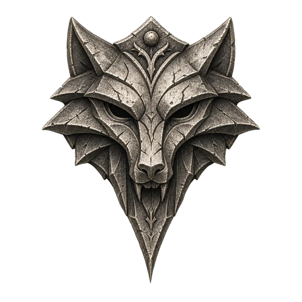

BUILD DRAFT
Character & Build Vault
Plan equipment, save experiments and designate your current setup.
Equipment

No chest piece selected
Set illustration to follow. Exact pieces appear in their slots.The first equipment catalogue covers Feline gear. Additional verified sets and reference details will follow.